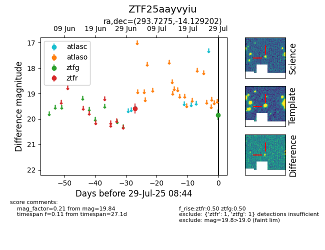

Target ZTF25aayvyiu at 2025-07-29 08:44, see:
FINK: fink-portal.org/ZTF25aayvyiu
Lasair: lasair-ztf.lsst.ac.uk/objects/ZTF25aayvyiu
ALeRCE: alerce.online/object/ZTF25aayvyiu
alt names
ZTF25aayvyiu (ztf,fink)
coordinates:
equatorial (ra, dec) = (293.7275,-14.12920)
galactic (l, b) = (24.9298,-15.90471)
photometry
last ztfg=19.84, ztfr=19.59
1 ztfg, 1 ztfr detections
